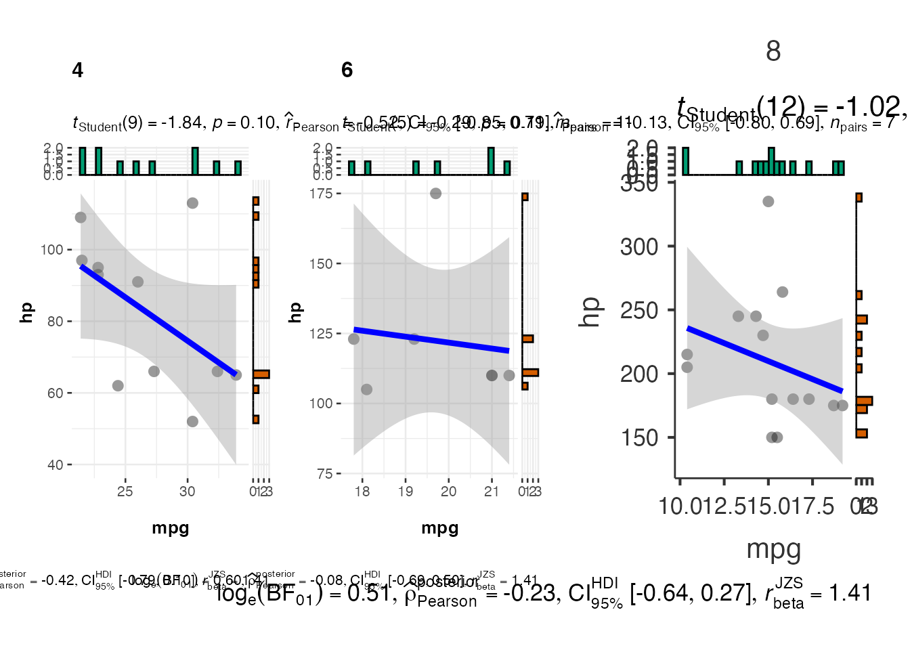
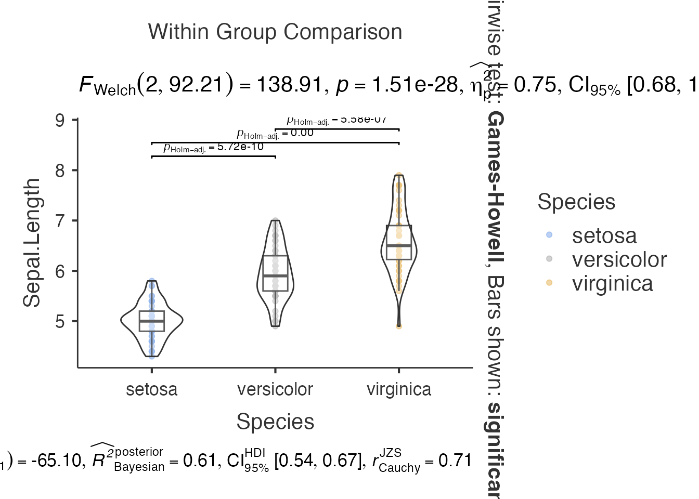
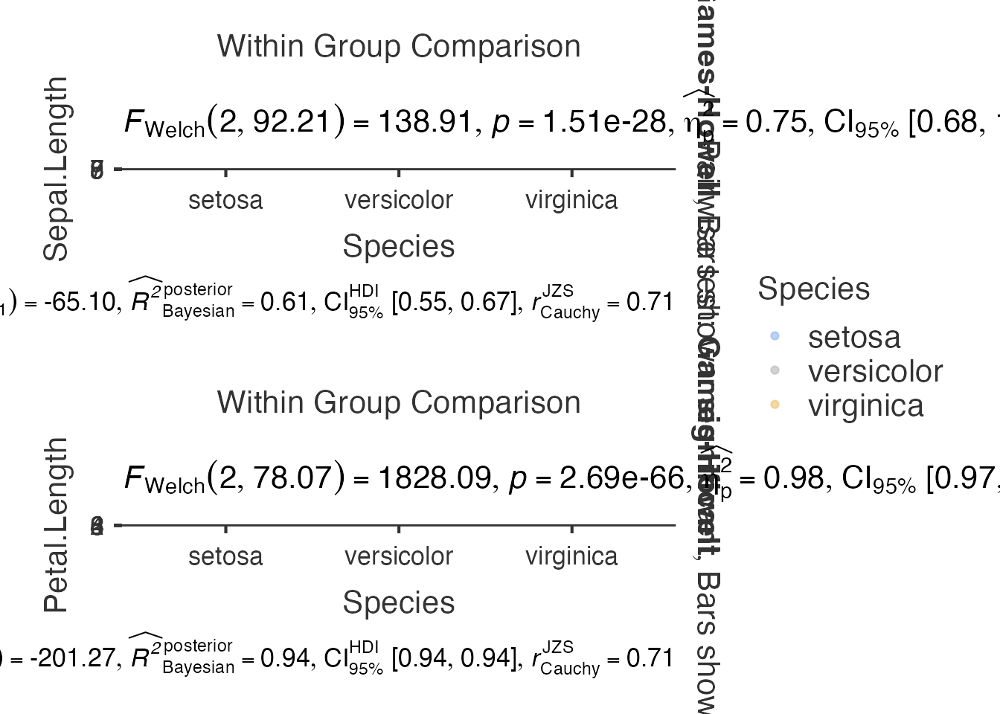
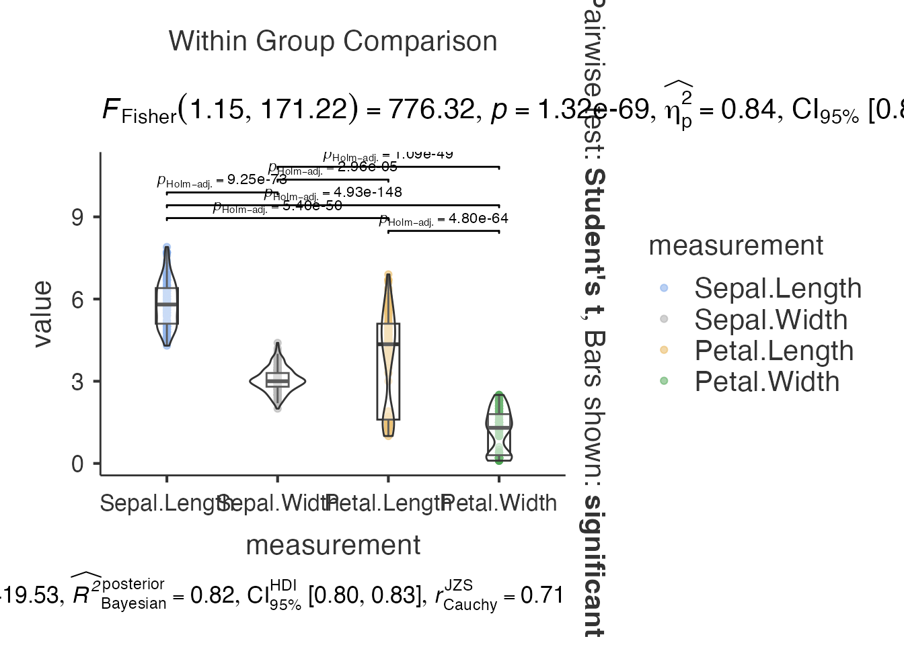
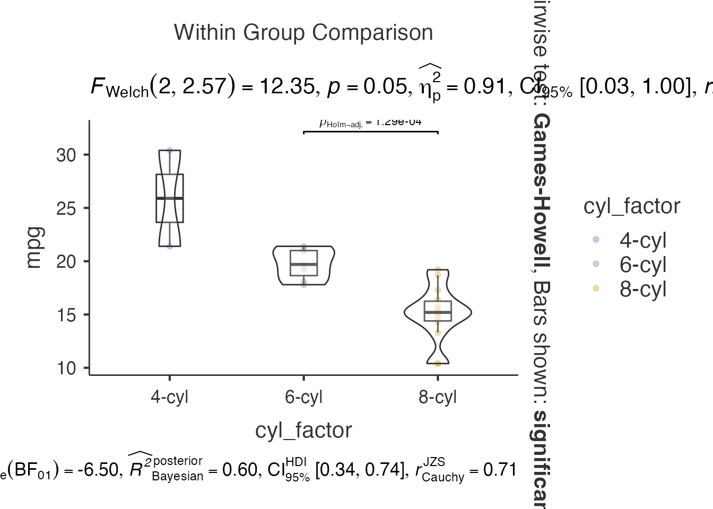

R Programming Guide for jjstatsplot
ClinicoPath Development Team
2025-07-13
Source:vignettes/general-30-r-programming-guide-legacy.Rmd
general-30-r-programming-guide-legacy.RmdUsing jjstatsplot Functions in R
This guide demonstrates how to use jjstatsplot functions directly in R for programmatic statistical visualization. While these functions are designed for jamovi integration, they can be powerful tools in R workflows.
Installation and Setup
# Install from GitHub
if (!require(devtools)) install.packages("devtools")
devtools::install_github("sbalci/jjstatsplot")
# Install dependencies if needed
install.packages(c("ggplot2", "ggstatsplot", "dplyr", "jmvcore"))
library(ClinicoPath)
#> Warning: replacing previous import 'dplyr::as_data_frame' by
#> 'igraph::as_data_frame' when loading 'ClinicoPath'
#> Warning: replacing previous import 'DiagrammeR::count_automorphisms' by
#> 'igraph::count_automorphisms' when loading 'ClinicoPath'
#> Warning: replacing previous import 'dplyr::groups' by 'igraph::groups' when
#> loading 'ClinicoPath'
#> Warning: replacing previous import 'DiagrammeR::get_edge_ids' by
#> 'igraph::get_edge_ids' when loading 'ClinicoPath'
#> Warning: replacing previous import 'dplyr::union' by 'igraph::union' when
#> loading 'ClinicoPath'
#> Warning: replacing previous import 'dplyr::select' by 'jmvcore::select' when
#> loading 'ClinicoPath'
#> Warning: replacing previous import 'igraph::union' by 'lubridate::union' when
#> loading 'ClinicoPath'
#> Warning: replacing previous import 'igraph::%--%' by 'lubridate::%--%' when
#> loading 'ClinicoPath'
#> Warning: replacing previous import 'cutpointr::tnr' by 'mlr3measures::tnr' when
#> loading 'ClinicoPath'
#> Warning: replacing previous import 'cutpointr::precision' by
#> 'mlr3measures::precision' when loading 'ClinicoPath'
#> Warning: replacing previous import 'cutpointr::tn' by 'mlr3measures::tn' when
#> loading 'ClinicoPath'
#> Warning: replacing previous import 'cutpointr::fnr' by 'mlr3measures::fnr' when
#> loading 'ClinicoPath'
#> Warning: replacing previous import 'cutpointr::tp' by 'mlr3measures::tp' when
#> loading 'ClinicoPath'
#> Warning: replacing previous import 'cutpointr::npv' by 'mlr3measures::npv' when
#> loading 'ClinicoPath'
#> Warning: replacing previous import 'cutpointr::ppv' by 'mlr3measures::ppv' when
#> loading 'ClinicoPath'
#> Warning: replacing previous import 'cutpointr::auc' by 'mlr3measures::auc' when
#> loading 'ClinicoPath'
#> Warning: replacing previous import 'cutpointr::tpr' by 'mlr3measures::tpr' when
#> loading 'ClinicoPath'
#> Warning: replacing previous import 'cutpointr::fn' by 'mlr3measures::fn' when
#> loading 'ClinicoPath'
#> Warning: replacing previous import 'cutpointr::fp' by 'mlr3measures::fp' when
#> loading 'ClinicoPath'
#> Warning: replacing previous import 'cutpointr::fpr' by 'mlr3measures::fpr' when
#> loading 'ClinicoPath'
#> Warning: replacing previous import 'cutpointr::recall' by
#> 'mlr3measures::recall' when loading 'ClinicoPath'
#> Warning: replacing previous import 'cutpointr::specificity' by
#> 'mlr3measures::specificity' when loading 'ClinicoPath'
#> Warning: replacing previous import 'cutpointr::sensitivity' by
#> 'mlr3measures::sensitivity' when loading 'ClinicoPath'
#> Warning: replacing previous import 'igraph::as_data_frame' by
#> 'tibble::as_data_frame' when loading 'ClinicoPath'
#> Warning: replacing previous import 'igraph::crossing' by 'tidyr::crossing' when
#> loading 'ClinicoPath'
#> Warning: replacing previous import 'magrittr::extract' by 'tidyr::extract' when
#> loading 'ClinicoPath'
#> Warning: replacing previous import 'mlr3measures::sensitivity' by
#> 'caret::sensitivity' when loading 'ClinicoPath'
#> Warning: replacing previous import 'mlr3measures::specificity' by
#> 'caret::specificity' when loading 'ClinicoPath'
#> Registered S3 methods overwritten by 'useful':
#> method from
#> autoplot.acf ggfortify
#> fortify.acf ggfortify
#> fortify.kmeans ggfortify
#> fortify.ts ggfortify
#> Warning: replacing previous import 'jmvcore::select' by 'dplyr::select' when
#> loading 'ClinicoPath'
#> Registered S3 methods overwritten by 'ggpp':
#> method from
#> heightDetails.titleGrob ggplot2
#> widthDetails.titleGrob ggplot2
#> Warning: replacing previous import 'DataExplorer::plot_histogram' by
#> 'grafify::plot_histogram' when loading 'ClinicoPath'
#> Warning: replacing previous import 'dplyr::select' by 'jmvcore::select' when
#> loading 'ClinicoPath'
#> Warning: replacing previous import 'mlr3measures::auc' by 'pROC::auc' when
#> loading 'ClinicoPath'
#> Warning: replacing previous import 'cutpointr::roc' by 'pROC::roc' when loading
#> 'ClinicoPath'
#> Warning: replacing previous import 'tibble::view' by 'summarytools::view' when
#> loading 'ClinicoPath'
library(ggplot2)
library(dplyr)
#>
#> Attaching package: 'dplyr'
#> The following objects are masked from 'package:stats':
#>
#> filter, lag
#> The following objects are masked from 'package:base':
#>
#> intersect, setdiff, setequal, union
# Load example data
data(mtcars)
data(iris)Understanding jjstatsplot Function Structure
Return Objects
All jjstatsplot functions return jamovi results objects with: -
$plot - The main ggplot2 object - $plot2 -
Secondary plot (when grouping variables are used) - Statistical results
and metadata
Basic Pattern
# General function signature
result <- jj[function_name](
data = your_data,
dep = dependent_variable(s),
group = grouping_variable,
grvar = grouping_for_separate_plots,
# Additional options...
)
# Extract the plot
plot <- result$plot
print(plot)Function-by-Function Guide
1. Histogram Analysis - jjhistostats()
# Basic histogram
hist_result <- jjhistostats(
data = mtcars,
dep = "mpg",
grvar = NULL
)
# Extract and display plot
hist_result$plot
# Histogram with grouping
hist_grouped <- jjhistostats(
data = mtcars,
dep = "mpg",
grvar = "cyl"
)
# Multiple plots created
hist_grouped$plot2
2. Scatter Plots - jjscatterstats()
# Basic scatter plot
scatter_result <- jjscatterstats(
data = mtcars,
dep = "mpg",
group = "hp",
grvar = NULL
)
scatter_result$plot
# Scatter plot with grouping variable
scatter_grouped <- jjscatterstats(
data = mtcars,
dep = "mpg",
group = "hp",
grvar = "cyl"
)
scatter_grouped$plot2
3. Box-Violin Plots - jjbetweenstats()
# Between-groups comparison
between_result <- jjbetweenstats(
data = iris,
dep = "Sepal.Length",
group = "Species",
grvar = NULL
)
between_result$plot
# Multiple dependent variables
between_multi <- jjbetweenstats(
data = iris,
dep = c("Sepal.Length", "Petal.Length"),
group = "Species",
grvar = NULL
)
between_multi$plot
4. Correlation Matrix - jjcorrmat()
# Correlation matrix
corr_result <- jjcorrmat(
data = mtcars,
dep = c("mpg", "hp", "wt", "qsec"),
grvar = NULL
)
corr_result$plot
5. Dot Plots - jjdotplotstats()
# Dot plot for group comparisons
dot_result <- jjdotplotstats(
data = mtcars,
dep = "mpg",
group = "cyl",
grvar = NULL
)
dot_result$plot
6. Bar Charts - jjbarstats()
# Bar chart for categorical data
bar_result <- jjbarstats(
data = mtcars,
dep = "cyl",
group = "am",
grvar = NULL
)
bar_result$plot
7. Pie Charts - jjpiestats()
# Pie chart
pie_result <- jjpiestats(
data = mtcars,
dep = "cyl",
group = NULL,
grvar = NULL
)
# Check structure and try different plot access
# pie_result$plot
str(pie_result)
#> Classes 'jjpiestatsResults', 'Group', 'ResultsElement', 'R6' <jjpiestatsResults>
#> Inherits from: <Group>
#> Public:
#> .createImages: function (...)
#> .has: function (name)
#> .lookup: function (path)
#> .render: function (...)
#> .setKey: function (key, index)
#> .setName: function (name)
#> .setParent: function (parent)
#> .update: function ()
#> add: function (item)
#> analysis: active binding
#> asDF: active binding
#> asProtoBuf: function (incAsText = FALSE, status = NULL, prepend = NULL, append = NULL,
#> asString: function ()
#> clear: function ()
#> clone: function (deep = FALSE)
#> fromProtoBuf: function (pb, oChanges, vChanges)
#> get: function (name)
#> getBoundVars: function (expr)
#> getRefs: function (recurse = FALSE)
#> index: active binding
#> initialize: function (options)
#> insert: function (index, item)
#> isFilled: function ()
#> isNotFilled: function ()
#> itemNames: active binding
#> items: active binding
#> key: active binding
#> name: active binding
#> options: active binding
#> parent: active binding
#> path: active binding
#> plot1: active binding
#> plot2: active binding
#> plot4: active binding
#> print: function ()
#> remove: function (name)
#> requiresData: active binding
#> resetVisible: function ()
#> root: active binding
#> saveAs: function (file, format)
#> setError: function (message)
#> setRefs: function (refs)
#> setState: function (state)
#> setStatus: function (status)
#> setTitle: function (title)
#> setVisible: function (visible = TRUE)
#> state: active binding
#> status: active binding
#> title: active binding
#> todo: active binding
#> visible: active binding
#> Private:
#> .clearWith: NULL
#> .error: NA
#> .index: NA
#> .items: list
#> .key: NA
#> .name:
#> .options: jjpiestatsOptions, Options, R6
#> .parent: jjpiestatsClass, jjpiestatsBase, Analysis, R6
#> .refs: ggplot2 ggstatsplot ClinicoPathJamoviModule
#> .stale: TRUE
#> .state: NULL
#> .status: none
#> .titleExpr: Pie Charts
#> .titleValue: Pie Charts
#> .updated: TRUE
#> .visibleExpr: NULL
#> .visibleValue: TRUE
#> deep_clone: function (name, value)
# Try alternative plot access if needed8. Within-Subjects Analysis - jjwithinstats()
# For repeated measures data
# Note: This requires appropriate data structure
# Creating example with iris data (not true repeated measures)
within_result <- jjwithinstats(
data = iris,
dep1 = "Sepal.Length",
dep2 = "Sepal.Width",
dep3 = "Petal.Length",
dep4 = "Petal.Width"
)
within_result$plot
Advanced Usage Patterns
Working with Multiple Variables
# Analyze multiple dependent variables simultaneously
multi_hist <- jjhistostats(
data = iris,
dep = c("Sepal.Length", "Sepal.Width", "Petal.Length"),
grvar = NULL
)
# This creates a combined plot
multi_hist$plot
Combining with dplyr Workflows
# Preprocessing with dplyr, then plotting
mtcars_processed <- mtcars %>%
mutate(
cyl_factor = factor(cyl, labels = c("4-cyl", "6-cyl", "8-cyl")),
am_factor = factor(am, labels = c("Automatic", "Manual"))
) %>%
filter(hp > 100)
# Use processed data
result <- jjbetweenstats(
data = mtcars_processed,
dep = "mpg",
group = "cyl_factor",
grvar = NULL
)
result$plot
Extracting Statistical Information
# jjstatsplot functions return rich statistical information
corr_analysis <- jjcorrmat(
data = mtcars[, c("mpg", "hp", "wt")],
dep = c("mpg", "hp", "wt"),
grvar = NULL
)
# The plot contains statistical annotations
print(corr_analysis$plot)
# Access underlying data if needed (structure varies by function)
str(corr_analysis, max.level = 2)
#> Classes 'jjcorrmatResults', 'Group', 'ResultsElement', 'R6' <jjcorrmatResults>
#> Inherits from: <Group>
#> Public:
#> .createImages: function (...)
#> .has: function (name)
#> .lookup: function (path)
#> .render: function (...)
#> .setKey: function (key, index)
#> .setName: function (name)
#> .setParent: function (parent)
#> .update: function ()
#> add: function (item)
#> analysis: active binding
#> asDF: active binding
#> asProtoBuf: function (incAsText = FALSE, status = NULL, prepend = NULL, append = NULL,
#> asString: function ()
#> clear: function ()
#> clone: function (deep = FALSE)
#> fromProtoBuf: function (pb, oChanges, vChanges)
#> get: function (name)
#> getBoundVars: function (expr)
#> getRefs: function (recurse = FALSE)
#> index: active binding
#> initialize: function (options)
#> insert: function (index, item)
#> isFilled: function ()
#> isNotFilled: function ()
#> itemNames: active binding
#> items: active binding
#> key: active binding
#> name: active binding
#> options: active binding
#> parent: active binding
#> path: active binding
#> plot: active binding
#> plot2: active binding
#> print: function ()
#> remove: function (name)
#> requiresData: active binding
#> resetVisible: function ()
#> root: active binding
#> saveAs: function (file, format)
#> setError: function (message)
#> setRefs: function (refs)
#> setState: function (state)
#> setStatus: function (status)
#> setTitle: function (title)
#> setVisible: function (visible = TRUE)
#> state: active binding
#> status: active binding
#> title: active binding
#> todo: active binding
#> visible: active binding
#> Private:
#> .clearWith: list
#> .error: NA
#> .index: NA
#> .items: list
#> .key: NA
#> .name:
#> .options: jjcorrmatOptions, Options, R6
#> .parent: jjcorrmatClass, jjcorrmatBase, Analysis, R6
#> .refs: ggplot2 ggstatsplot ClinicoPathJamoviModule
#> .stale: TRUE
#> .state: NULL
#> .status: none
#> .titleExpr: Correlation Matrix
#> .titleValue: Correlation Matrix
#> .updated: TRUE
#> .visibleExpr: NULL
#> .visibleValue: TRUE
#> deep_clone: function (name, value)Customization and Theming
Plot Modifications
# Basic scatter plot
scatter_result <- jjscatterstats(
data = mtcars,
dep = "mpg",
group = "hp",
grvar = NULL
)
# Display the plot
scatter_result$plot
# Note: For plot customization, extract the ggplot object first
# then use standard ggplot2 syntax for modificationsIntegration with R Markdown
Chunk Options for Optimal Display
# Recommended chunk options for jjstatsplot in R Markdown:
# ```{r plot-name, fig.width=8, fig.height=6, dpi=300}
# result <- jjhistostats(data = mydata, dep = "variable")
# result$plot
# ```Creating Function Wrappers
# Create convenience wrappers for common analyses
quick_histogram <- function(data, variable, group_by = NULL) {
result <- jjhistostats(
data = data,
dep = variable,
grvar = group_by
)
if (is.null(group_by)) {
return(result$plot)
} else {
return(result$plot2)
}
}
# Usage example
# quick_histogram(mtcars, "mpg", "cyl")
print("Function wrapper created successfully")
#> [1] "Function wrapper created successfully"Batch Analysis Functions
# Function to create multiple plots
analyze_variables <- function(data, variables, group_var = NULL) {
plots <- list()
for (var in variables) {
result <- jjhistostats(
data = data,
dep = var,
grvar = group_var
)
plots[[var]] <- if (is.null(group_var)) result$plot else result$plot2
}
return(plots)
}
# Create multiple histograms
numeric_vars <- c("mpg", "hp", "wt")
# plot_list <- analyze_variables(mtcars, numeric_vars, "cyl")
# Display first plot
# print(plot_list$mpg)
print("Batch analysis function created successfully")
#> [1] "Batch analysis function created successfully"Error Handling and Debugging
Common Issues and Solutions
# Safe function wrapper with error handling
safe_jjhistostats <- function(data, dep, ...) {
tryCatch({
result <- jjhistostats(data = data, dep = dep, ...)
return(result$plot)
}, error = function(e) {
message("Error creating histogram: ", e$message)
return(NULL)
})
}
# Usage with potential problematic data
plot_result <- safe_jjhistostats(mtcars, "nonexistent_variable")Data Validation
# Function to check data before analysis
validate_data <- function(data, variables) {
issues <- list()
# Check if variables exist
missing_vars <- variables[!variables %in% names(data)]
if (length(missing_vars) > 0) {
issues$missing_variables <- missing_vars
}
# Check for sufficient data
for (var in variables) {
if (var %in% names(data)) {
non_missing <- sum(!is.na(data[[var]]))
if (non_missing < 10) {
issues$insufficient_data <- c(issues$insufficient_data, var)
}
}
}
return(issues)
}
# Example usage
issues <- validate_data(mtcars, c("mpg", "hp", "nonexistent"))
print(issues)
#> $missing_variables
#> [1] "nonexistent"Performance Considerations
Large Datasets
# For large datasets, consider sampling
large_data_plot <- function(data, dep, sample_size = 1000) {
if (nrow(data) > sample_size) {
sampled_data <- data[sample(nrow(data), sample_size), ]
message("Sampling ", sample_size, " rows from ", nrow(data), " total rows")
data <- sampled_data
}
jjhistostats(data = data, dep = dep, grvar = NULL)$plot
}Best Practices Summary
1. Function Usage
- Always check return structure:
$plotvs$plot2 - Handle missing data appropriately
- Validate variable names before analysis
2. Data Preparation
- Use meaningful variable names and factor labels
- Ensure appropriate data types (numeric, factor)
- Consider data transformations when needed
3. Workflow Integration
- Combine with dplyr for data preprocessing
- Create wrapper functions for repeated analyses
- Use error handling for robust scripts
4. Output Management
- Extract plots with
result$plot - Modify plots using standard ggplot2 syntax
- Save plots with appropriate dimensions and resolution
5. Documentation
- Document your analysis choices
- Include variable descriptions
- Report statistical assumptions and violations
This guide provides a foundation for using jjstatsplot functions programmatically in R. The functions offer a convenient way to create publication-ready statistical visualizations with minimal code while maintaining access to the underlying ggplot2 objects for further customization.